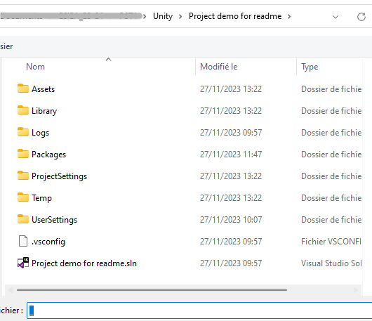
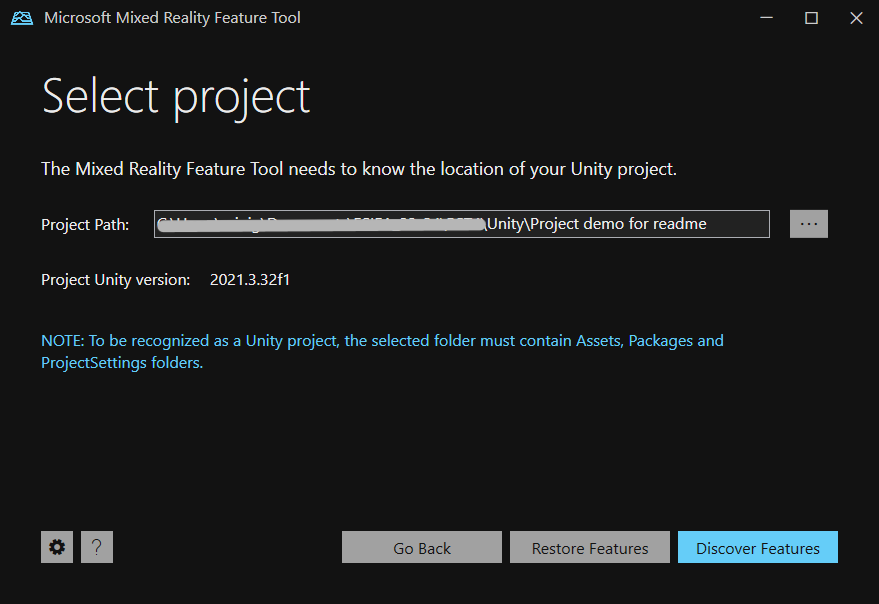
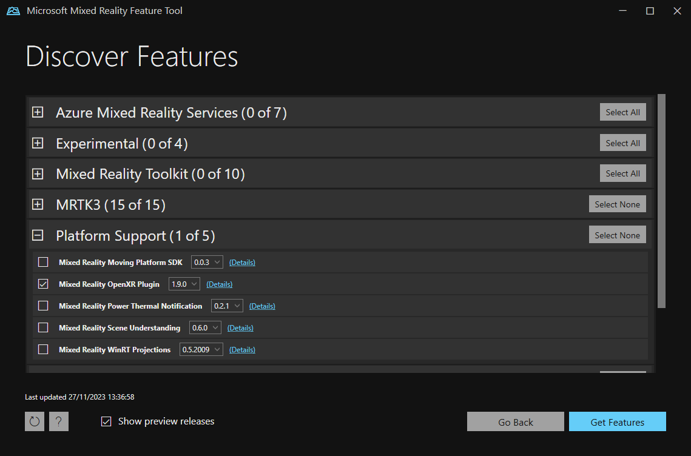
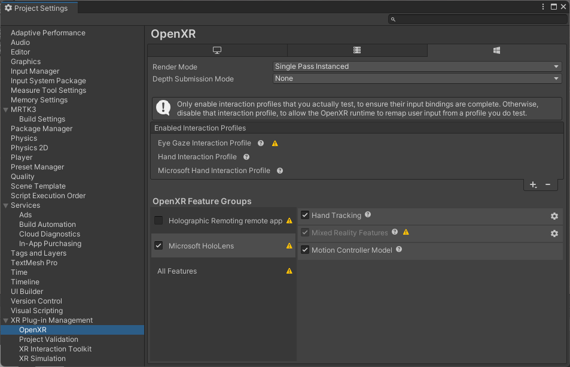

La librairie Mixed Reality ToolKit est une suite d'outils adaptée à l'Hololens qui va permettre l'interaction avec les différents objets d'un environnement Unity.
MRTK ajoute à Unity des packages permettant le contrôle des mains, du regard ou des commandes vocales, pour permettre une immersion totale au travers du Hololens.
Après avoir appuyé sur Start, choisissez votre Project Path. Dans l'explorateur de fichier, un '_' doit s'afficher signaler à l'utilisateur que le dossier est sélectionné

Sur la page Discover Features, cliquer sur "Select All" pour MRTK3 et sélectionner Mixed Reality OpenXR Plugin dans la section Platform Support

Faire toutes les étapes de validation jusqu'à fermer la page MRTK puis revenir sur Unity
Setup MRTK3
Lorsque l'installation de MRTK3 est finie, il faut maintenant setup MRTK3 afin que la librairie soit utilisable.
Aller dans les Project Settings (Edit -> Project Settings)
Dérouler XR Plug-In Management et ouvrir Project Validation
Cliquer sur le bouton Fix All jusqu'à que celui-ci ne soit plus disponible
Dans la fenêtre OpenXR, sélectionner le Hololens avec toutes ses options. Ajouter ensuite les profiles d'intéraction en utilisant le '+'

Revenir sur la page Project Validation puis Fix All les warnings ou erreurs autant que possible
Ce tutoriel est enfin terminé. Votre projet Unity est prêt pour une application exploitant le Hand Control, le Eye Tracking ou le Voice Control du Hololens 2.